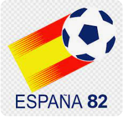

copa1930
copa1934
copa1938
copa1950
copa1954
copa1958
copa1962
copa1966
copa1970
copa1974
copa1978
copa1982
copa1986
copa1990
copa1994
copa1998
copa2002
copa2006
copa2010
copa2014
copa2018
copa2022
COPA DO MUNDO DE 1982

Dados do Torneio
pais-sede:
campeao:
vice-campeao:
terceiro lugar:
quarto lugar:
numero de partcipantes:
data de inicio:
data de termino:
numero de estadios:
numero de jogos:
numero de gols:
media de gols por partida:
bola oficial:
artilheiros:
mascote:
publico:
ver dados da copa 1982